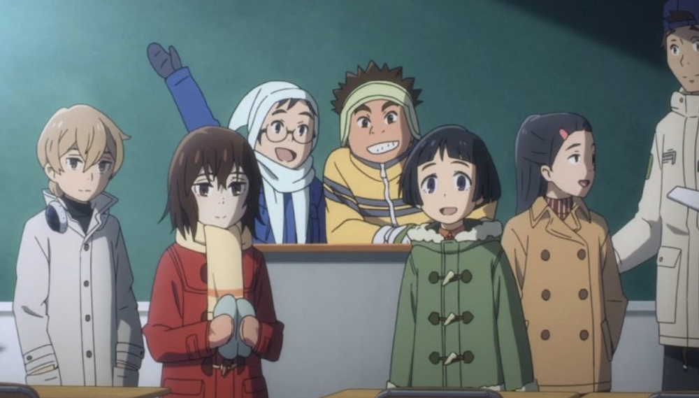

Erased
- Tipo: Serie
- Genero: Seinen
- Emitido: Ene 7 de 2016 a Mar 24 de 2016
- Estado: Concluido
Es una serie de ciencia ficción que cuenta la historia de Satory Fujinuma, un autor de manga sin mucho éxito que sufre de un peculiar fenómeno conocido como Resucitación en el cual se transporta a la fuerza atrás en el tiempo hasta el momento anterior de que ocurra algo que supone un peligro para una vida. Satoru no tarda en descubrir que el fenómeno persiste hasta que la causa de la amenaza desaparece.
CAPITULOS
